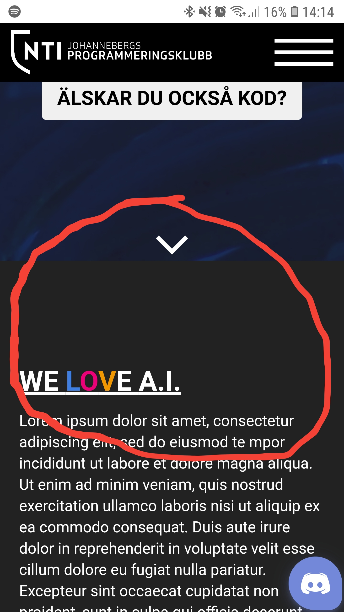
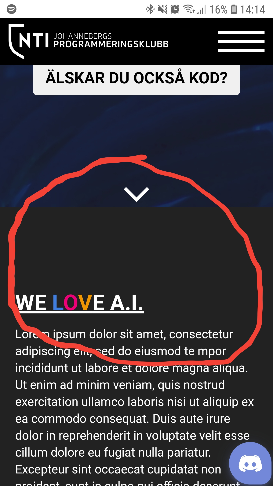
Mitt webbutvecklings-projekt skall handla om skolans Programmeringsklubb. Jag sitter själv i styrelsen och vill utveckla en hemsida där vi informerar om klubben, sprider info och underlättar för eleverna som går programmeringskurserna på skolan. Primär målgrupp är eleverna på NTI Johanneberg, men även för andra programmeringsintresserade. Sidan skall följa den stilguide vi har för klubben. Vi använder färgerna #3E7EE1 #EB0077 och #F09700. Dessa är färgerna för det gamla ITG-profilen och har hängt med från äldre hemsidor och projekt. Som typsnitt använder vi Soleto vilket är NTI Gymnasiets font. Detta för att skapa samhörighet med skolan och vissa att vi är en del av det nya.
Min skiss gjord i Adobe XD och anteckningar gjorda i Paint.
| Vecka | På lektionen | Utanför lektionen |
|---|---|---|
| 4 |
Uppstart och letning av inspiration samt idéer. Vi gick även igenom GitHub. |
Jag ska kolla på lite inspiration och vilket material jag kan fylla hemsidan med. |
| 5 |
Andra uppstarten med resten av klassen. Gå igenom samma saker som förra lektionen fast med alla i klassen. Börja fixa med Git och skissa en ritning till layouten. |
Göra färdigt designen och börja koda på första-sidan. Importera och ordna all grafik. Fixa meny, footer och olika avsnitten. |
| 6 | Fortsätta utveckla första-sidan och få designen för hela hemsidan klar. När jag väll valt och stylat första-sidan går det enkelt att applicera element och stil på de andra undersidorna. | Börja jobba på responsiviteten av första-sidan. Eventuellt börja lägga in material på de andra undersidorna. |
| 7 | Ingen lektion, sportlov. | Göra färdigt design och layout för förstasidan. Kolla på responsivitet och optimering. Skapa alla design element. |
| 8 | Dokumentation och finslip av design. Börja lägga in de andra sidorna och fylla dessa med innehåll. | |
| 9 | Fortsätta med design och innehåll på projektets övriga sidor. | |
| 10 | Fylla alla hemsidor med info. | |
| 11 | Köra någon form av kamratrespons för att kolla vad som kan förbättras i UX/UI. | Åtgärda den konstruktiva kritiken. |
| 12 | Sista finslip och validering. Köra lite code-cleanup och optimering. Se till att alla dokumentation finns samt att mappstrukturen är riktig. Sist: Pusha slutgiltig version till GitHub för bedömning. | Lämnar in projektet och känner mig nöjd. :) |
v.4 Idag har vi gått igenom uppgiften. Vi har även lärt oss om Git och GitHub. Största delen av tiden gick åt att planera och skissa en design till hemsidan. Jag har bestämt att jag vill göra en sida för skolans Programmeringsklubb. Jag har även bestämt vilka olika sidor jag vill ha med och deras övergripande innehåll. Jag letade även ispiration och har kommit på en övergripande design till min hemsida. Nästa vecka ska jag bygga strukturen på sidan och lägga in det material som behövs för att börja med layout och design.
Idag har jag lyssnat på samma genomgång som vi i naturgruppen fick förra veckan av Leo Lisinski. Idag har jag fortsatt med att utveckla min skiss och designa layouten. Jag började även koda strukturen och skelettet av sidan för att veta vilka taggar/avsnitt jag ska använda. Jag laddade även ner bilder och grafik som skall användas i projektet.
Jag fick lite tid över under helgen och gjorde ganska mycket av projektet. Jag gjorde min skiss digitalt i Adobe XD för att lättare kunna visualisera layout och design. Sen importerade jag fonter, bilder, gjorde backgrundsvideon, styling, meny, footer och en första version av första-sidan. Idag har jag dokumenterat arbetet, lagt in förklaringar och mått på min XD-design i Paint. Jag fortsatte och finslipade designen av första-sidan. Jag stötte på ett problem med att min scroll-länk på sidan scrollade förbi länkat element eftersom headern är fixed. Jag löste det med scroll-padding-top: 10vh (höjden på headern). Under lovet ska jag anpassa första-sidan till desktop så att hemsidan skalar korrekt. Överlag gick det bra idag.
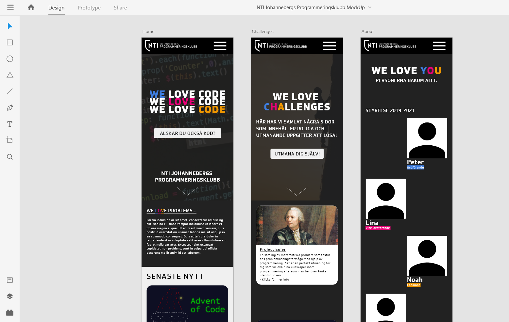Under lovet jobbade jag med att förbättra design, layout och responsivitet. Detta gick bra och jag fortsatte finslipa på det under dagens lektion. Jag tycker att designen och responsivitet har uppnått ett tillfredställande resultat. Dock har jag fått en jobbig bugg som bara syns på mobilversionen av hemsidan. Jag får en onormalt stor margin när man visar hemsidan på en mobiltelefon, men inte när man visar mobil på datorn i inspekteraren. (se bilder)
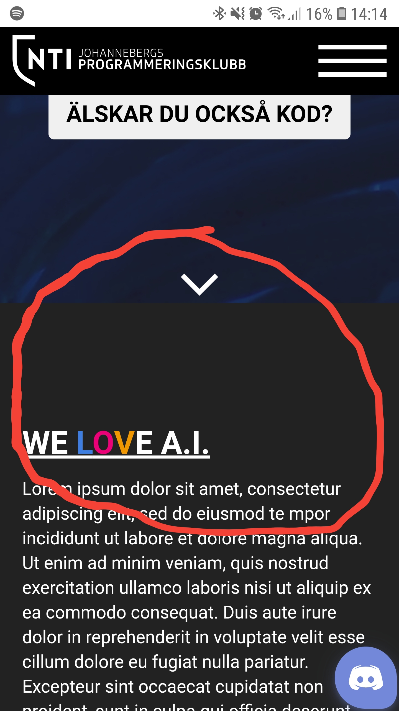
Jag ska prata med Emil nästa lektion och se vad felet kan vara. Just att felet bara uppstår på mobila enhter får mig att fundera ifall det kanske kan vara inkompatibilitet med min enhet.
Hemma och till nästa gång skall jag börja på de övriga sidorna nu när jag är färdig med designen.
Hemma har jag jobbat med de övriga sidorna. Jag har anpassat designen till att passa de övriga ämnena. Jag optimerade även skalningen av backgrundsbilden så att det intressanta i bilden även syns i mobilversionen. Under lektionen jobbade jag med hur vi ska visa våra projekt. Jag tänker mig ett kortsystem likt det som redan finns på github. Detta visade sig vara svårt att implementera eftersom jag då skulle behöva samma css som dem. Jag frågade även Emil om det konstiga buggen(se förra veckan). Han visste inte hur man skulle åtgärda problemet och skillnaden var så minimal att vi bestämde att strunta i det. Hemma och nästa lektion ska jag jobba med att fylla de resterande sidorna med innehåll och göra "om oss" sidan som skall ha lite annorlunda design. Se nedan för den designen jag tänker.
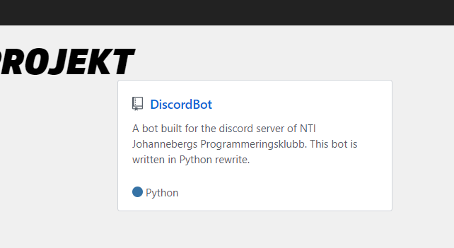Denna vecka har det gått bra. Jag började med att optimera min video på första sidan. Jag körde den genom ett program som heter HandBrake för att komprimera filen. Jag fick ner storleken från 22 till 7 mb, vilket förhoppningsvis kommer förbättra upplevelsen och prestandan på sidan. Jag optimerade även videon för progressiv nedladdning, vilket innebär att videon kan börja spelas innan den har laddats ner helt av klienten. Sedan upptäckte jag även en väldigt intressant sak. Hemma, där min monitor har en annan upplösning en skolans laptop, har jag i inspekteraren simulerat en skärm som är 1920 x 1080p för att designen ska se likadan ut. Jag har dock aldrig tyckt att det sätt riktigt likadant ut. Jag kollade därför upp skärmstorleken på MyDevice.io Det stämde inte överrens med den fysiska skärmens upplösning. Då kollade jag i inställningarna för windows och såg att windows automatiskt uppskalar alla appar och innehåll med 125%. Dett är förståeligt eftersom det ökar läsbarhet överlag men är frustrerande för mig som webbutvecklare. Jag har nedan infogat bilder som visar på skillnader med windows 125% uppskalning på/av.
Jag har testat kontrasten på min sida. Jag lade in en bild på min hemsida ochv valde sedan färgerna utifrån bilden. Programmet godkände min kontrast med full poäng. (Se bilder).
 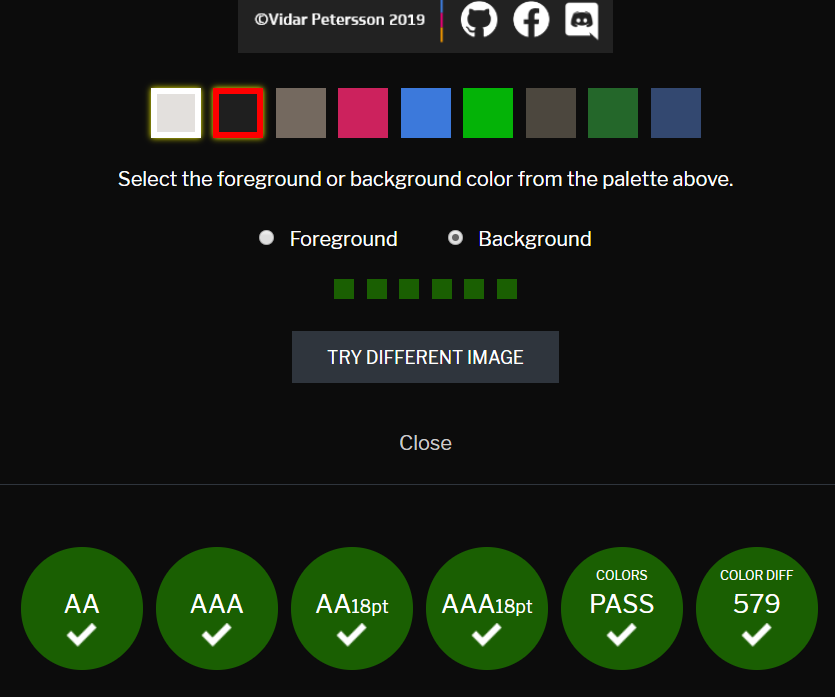
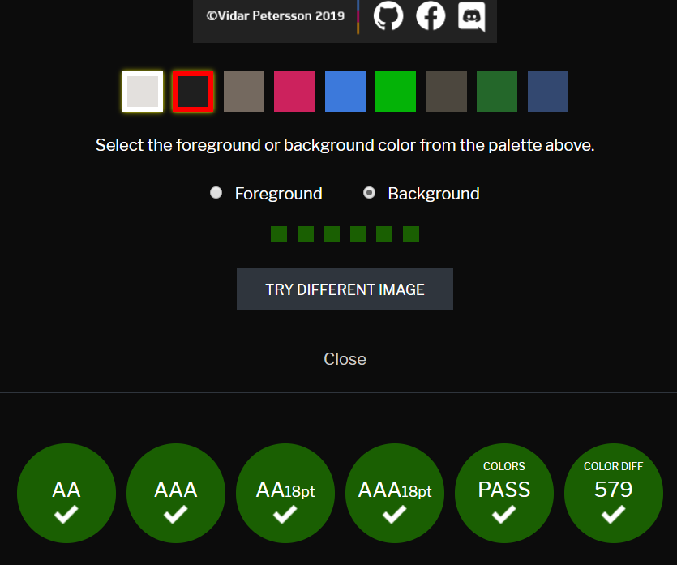
Jag har även uppdaterat coden, rensat lite bland gammla bilder och kod som inte längre behövdes. Jag började även jobba på "om oss"-sidan. Jag la in placeholders för profilbilderna och gjorde även om designen lite grann för presentationen av styrelsen. Jag tyckte att det skulle bli lite för upprepat att använda card-formatet på alla sidor på hemsidan.
Idag började jag med att validera min kod och kollade så att designen såg likadan ut på olika webbläsare. Jag jämförde Chrome (som jag jobbat i) mot Firefox. Som man kan se på bilderna nedan laddade båda hemsidorna och allt material verkade vara på rätt plats. Det enda som skiljde sig var att fonten var olika. Jag använde mig av inspekteraren och kollade i min css-fil. Eftersom jag har valt ett speciellt typsnitt var jag tvungen att ladda ner och importera det i css-filen. Det jag hade glömt var att lägga till "../" innan för att ta sig ur css-mappen innan den kunde öppna mappen där fonterna låg. Varför detta problem inte uppenbarade sig på Chrome har jag ingen aning.
 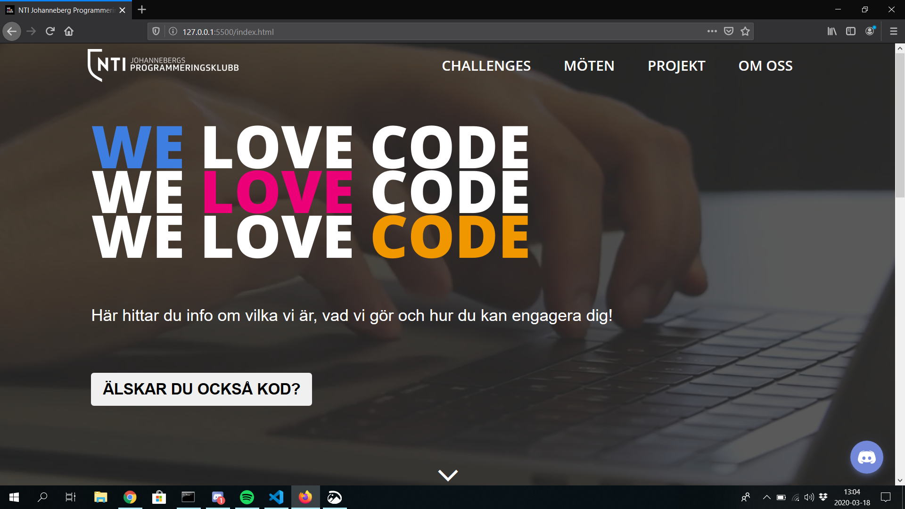
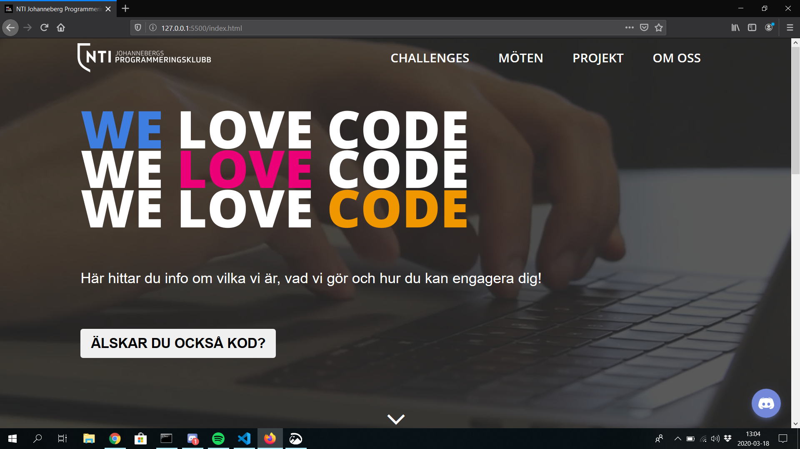
Efter att ha pillat lite med fonterna upptäckte jag att det var lite små problem som uppstod i och med att jag inte hade länkat till fonterna på rätt sätt. Löste det genom att mixtra lite med inställningarna för font-size och font-weight.
Jag fortsatte sedan med min about/profile-page. Jag gjorde färdigt designen och anpassade den sidan. Jag fortatte även med min projekt-sida där jag försöker efterlikna hur våra github projekt på Github. Jag kopierade designen men när jag var färdig insåg jag att det inte gick att mobilanpassa. Jag får fortsätta med det utanför lektionstid.
Idag har jag jobbat med det sista på min hemsida. Jag har lagt in minified css, validerat min kod och gjort färdigt med alla sidor. Större delen av lektionen gick åt till att lösa problemen kring hur jag skulle visa projekten. Jag dumpade github-card grejen eftersom det inte skulle funka och provade att göra en egen layout. Jag använde mig av en HTML-table för att skapa en bra struktur och stylade den sedan i css. Jag tycker själv att resultatet blev mycket bra. Jag skall nu utanför lektionen skriva min utvärdering, spela in demofilmen och lägga in lite smågrejer. Sedan är projektet redo att skickas in.
När jag körde html-validatorn fick jag inga error dock några anmärkningar på att jag använt h1-taggen flera gånger på samma sida. Jag löste det genom att ändra om lite i taggarna på sidorna.
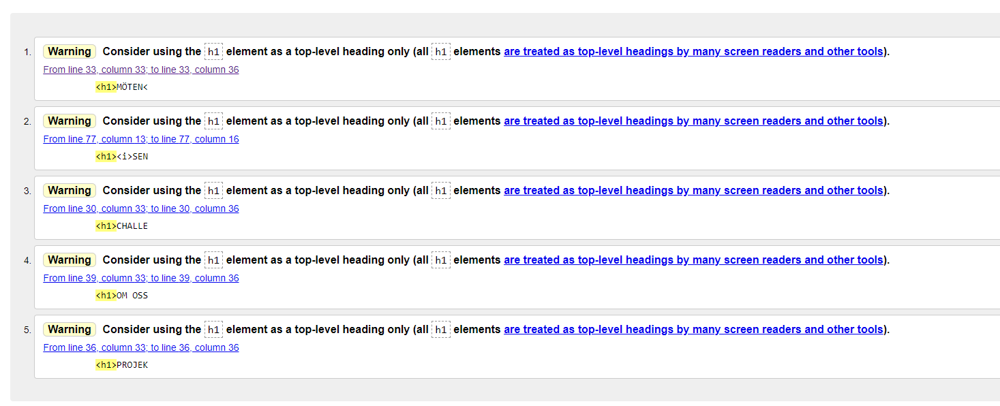När jag körde CSS-validatorn fick jag några anmärkningar (se bild). De flesta fel var parsningsfel från att jag använt css variabler. Detta skall dock inte vara något problem eftersom det fungerar och finns med i css dokumentationen. Align-items hade jag satt fel property till men det funkade fortfarande så jag tog bara bort den.
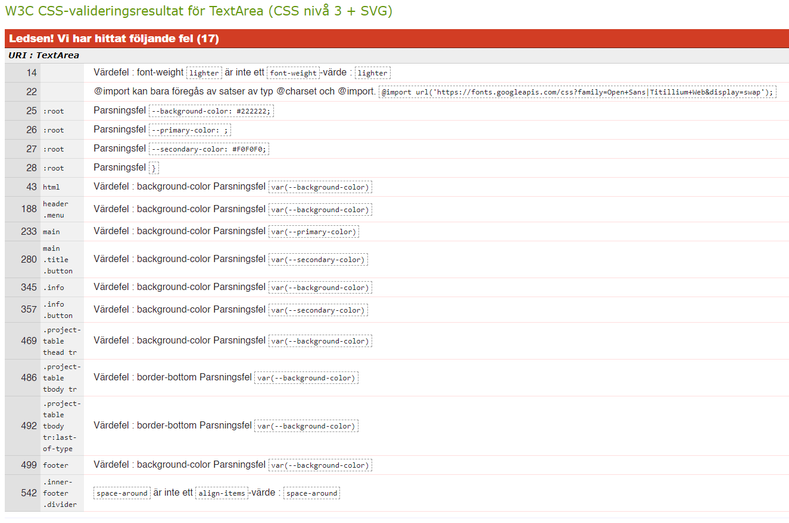Såhär ser hemsidan ut på min mobil (Samsung Galaxy S7). Allt fungerar bra på mobilen och designen stämmer överrens med den man får i datorns inspekterare.
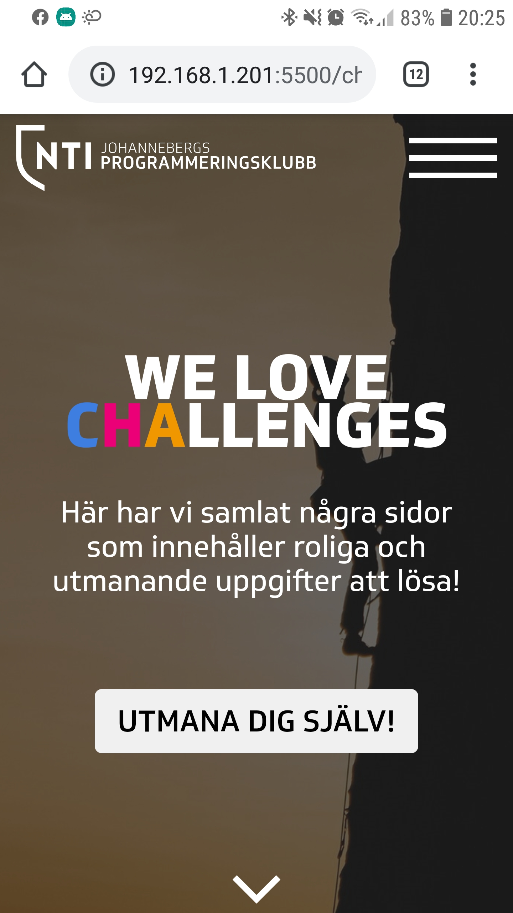Jag körde lite validering under lektionstid allt eftersom. Se respektive vecka för bilder, tester och korrigeringar.
Detta projekt har verkligen varit ett nytt steg för mig. Det förra projektet vi gjorde kändes som en bra uppvärmning för att bli bekväm med design, verktyg och layout.
Jag blev överlag väldigt nöjd med mitt projekt. Jag la ner ganska mycket tid på att designa och hitta den layouten jag ville ha i Adobe XD. Jag tycker att det är mycket enklare att koda när man vet exakt vilken design man vill uppnå. Då är det bara att trycka in det man vill ha i css:en och html koden utan att behöva experimentera sig fram hur man vill ha det och vad som ser bra ut.
Det största problemet jag hade, som tog mest tid, var hur jag skulle presentera klubbens projekt. Alla våra större projekt finns på vår GitHub så jag tänkte att man skulle kunna presentera de på ett liknande sätt och länka dit. Jag försökte först härma GitHubs design för att skapa anknytning till GitHub. Jag upptäckte dock att det var oerhört svårt att få det liknande och att passa in med sidans övriga design och responsivitet. Jag löste det genom att använda table taggen och göra det som en excel spreadsheet med projekten, språk och länkar.
I det förra projektet fick jag responsen att försöka bryta upp upprepningen av layout och design på varje sida. I min elektrofysik hemsida hade jag samma kort system på varje sida. I detta projekt försöker jag hitta balansen mellan sammanhållande design för att inte förvirra användaren och att inte bli repetitiv. Jag använde samma landing/main på varje sida men att bryta upp innehållet.
Ifall jag hade haft mer resurser och tid hade jag vidareutvecklat vissa grejer. Det första är att bygga en mer dynamisk hemsida. Ett sätt att enkelt och, i viss mån, automatiskt uppdatera innehållet. Nyhetsflödet på förstasidan borde man lätt kunna uppdatera. Jag har redan nu en template för hur nyhetskorten ska se ut. De är hyfsat responsiva. Github projekten borde uppdateras automatiskt när nya repos läggs till i organisationens sida.